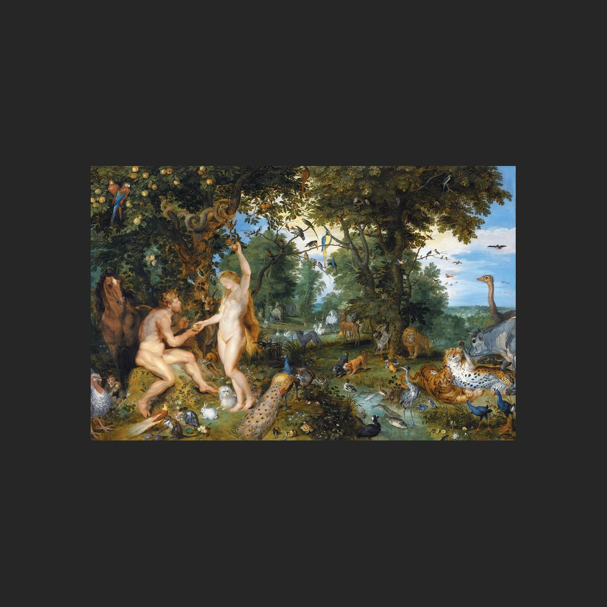

伊甸園和人類的墮落
老揚·勃魯蓋爾、魯本斯 · 約1615年
The Garden of Eden with the Fall of Man
導賞節錄
樹木、花草同動物擠滿呢片樂園，係老揚·勃魯蓋爾同彼得·保羅·魯本斯一齊畫出嚟嘅。喺《聖經》故事入面，亞當同厄娃係住喺伊甸園嘅人類始祖；佢哋而家做緊嘅事，就快令故事轉向。
厄娃已經喺蛇嗰度接過禁果，正遞畀亞當。幅畫停喺亞當食落去之前嗰一刻。故事入面，食咗唔准食嘅果，即係失去原本嘅純真；兩人後來畀逐出樂園，就係「人類墮落」嘅意思。花草同動物仲係佈滿成幅畫，但故事嘅轉折已經喺眼前。
— 廣東話講稿 · Artvery
完整講解約 2 分鐘，可在 Artvery App 收聽。粵語、台灣國語、內地普通話三種語音，館內對準作品即可識別播放。
即將登陸 App Store
App 即將推出，敬請期待。推出後免費下載，每座博物館單獨購買，一次購買永久使用。
作品資料
- 作者
- 老揚·勃魯蓋爾、魯本斯
- 年代
- 約1615年
- 尺寸
- 74.3 × 114.7 厘米
- 位置
- 莫瑞泰斯皇家美術館 · 法蘭德斯與早期尼德蘭繪畫
- 館藏編號
- 253
莫瑞泰斯皇家美術館參觀攻略：必看名作和路線 · 莫瑞泰斯皇家美術館廣東話語音導賞